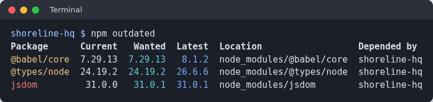
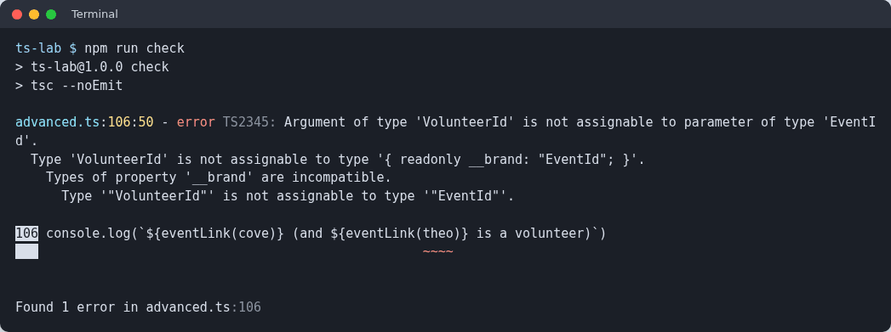

🌅 Lesson 11.2: Next Steps
Thirty-four lessons ago you watched TypeScript catch a NaN that plain JavaScript let through without a word. Now you have a typed, tested, deployed app behind you and your own project under way. This last lesson looks past the course. You meet the advanced TypeScript that fills library code and team codebases, and write each kind once on Shoreline Crew data so it never looks like magic again. You see what frameworks such as Next.js add, what carries over to the volunteers' phone app in React Native, and how working on a team changes the habits you practiced alone. Then you merge your first reviewed pull request and make a plan for what comes next.
🎯 Learning Objectives
By the end of this lesson, you will be able to:
- Read the advanced TypeScript you will meet in libraries and team code (
satisfies, mapped types, template literal types, conditional types withinfer, branded types) and write a small example of each - Give an untyped package a declaration file instead of silencing the error, and choose
satisfiesoveraswhen you want a value checked - Explain what a framework such as Next.js adds to a Vite single-page app, and what carries over to React Native and the volunteers' phone app on the same API and types
- Work on a team with short-lived branches, a pull request template, CI and helpful code review, and keep a project current with release notes and
npm outdated - Look back over the whole course and write a learning plan for the months after it
📦 Code for this lesson
Starting code: lesson-35-start.zip · Finished code: lesson-35-end.zip. Each folder has a README with the commands to run it. Shoreline Crew HQ itself doesn't change: the finished code adds ts-lab/advanced.ts and .github/pull_request_template.md.
In This Lesson
🧭 After the Course
Every lesson so far handed you a map. From here you will open code nobody wrote for a learner: a library's type declarations, a teammate's pull request, a framework's documentation, the release notes of a tool you depend on. None of it needs a new kind of skill. It needs the habits you already have, applied to unfamiliar text: read what is actually there, find the layer, try one small thing, check.
💡 Mental model: reading the tide table yourself
New Shoreline Crew volunteers just show up when the organizer says. After a few seasons they read the tide table themselves: they know a 0.2 m low tide at 07:42 means the tide pools are open, and nobody has to tell them. The tide table was always public; what changed is that they can read it. Library types are that table. Partial<T>, useState's signature and React Router's path types were in your node_modules from Lesson 1.2. This lesson teaches you to read them.
Why this matters: in a job, most of your time goes to code that already exists, written by people who aren't in the room. Being able to read a type you didn't write, review a change with care and upgrade a dependency without fear is what makes you useful in your first week instead of your third month.
🔷 Advanced TypeScript You'll Meet
Course code mostly uses types: interfaces, unions, generics and the utility types from Lesson 2.4. Library code also computes types from other types. You have relied on that all along. Here is Partial, straight from TypeScript's own declarations (in VS Code, Ctrl+click on Partial anywhere, ⌘ Cmd+click on a Mac, or right-click it and choose Go to Definition):
type Partial<T> = {
[P in keyof T]?: T[P];
};
type Record<K extends keyof any, T> = {
[P in K]: T;
};
type ReturnType<T extends (...args: any) => any> = T extends (...args: any) => infer R ? R : any;Read them out loud. Partial<T>: "for each property name P of T, an optional property with the same type". Record<K, T>: "for each key P in K, a property of type T" (that is why a Record<EventStatus, string> must list every status). ReturnType<T>: "if T is a function, whatever it returns, called R". The first two are mapped types, the third a conditional type with infer. Four more kinds show up again and again:
| You'll see | It means | Where you'll meet it |
|---|---|---|
{ … } satisfies T | "Check this value against T, but keep the value's own, more precise type" | Config objects, label and route tables; Lesson 9.2's mock answers used it |
{ [K in keyof T]: … } | A mapped type: a new object type built from another type's keys, optionally renamed with as | Utility types, form libraries (which fields are dirty or touched), store setters |
`/api/${Collection}` as a type | A template literal type: strings that must follow a pattern | Routes, event names, CSS class names, React Router's path types |
T extends U ? X : Y and infer | A conditional type: "if T fits U, then X, else Y", with infer naming a part to pull out | ReturnType, Awaited, every library that works out a type from your arguments |
string & { readonly __brand: 'EventId' } | A branded type: a string that TypeScript treats as its own kind, so ids can't be swapped | Ids, money, validated strings, in codebases that have been bitten by a mix-up |
The project builds one working example of each on Shoreline Crew data, in a new ts-lab/advanced.ts next to the files you wrote in Module 2. Here is the payoff, from React Router, the library behind every page of the HQ. This is how generatePath (Lesson 6.2's FAQ) knows that '/events/:eventId' needs an eventId: a template literal type with infer takes the path string apart, letter by letter if it has to.
declare function generatePath<Path extends string>(originalPath: Path, params?: GeneratePathParams<Path>): string;
// ...
type PathParam<path extends string> = (keyof ParseParams<path>) & string;After Step 3 of the project you will have written a smaller version of ParseParams yourself. You don't need to write types like these every week. Most application code needs interfaces, unions and the occasional generic, and a team will thank you for the simplest type that does the job. But when a library's error message mentions PathParam<…> or Setters<…>, you now know it is a type computed from your own code, and you can follow it.
✅ You have been doing this since Lesson 2.4
Each lesson's "read the error" habit is the same skill. The long messages from TanStack Query in Lesson 7.1 or React Hook Form in Lesson 8.1 were these computed types talking. Reading advanced types is mostly patience: find the outermost shape, then read inward one level at a time.
📄 Declaration Files
A .d.ts file describes code without containing any (Lesson 2.4's vite-env.d.ts was one). Almost every package you installed in this course ships its own. Some packages don't, usually older or smaller ones. Here is what that looks like, with a tiny made-up package, marisol-tides, that exports one function written in plain JavaScript:
import { nextLowTide } from 'marisol-tides'
console.log(nextLowTide('Seal Rock'))Expected output (from npm run check in ts-lab)
scratch.ts:1:29 - error TS7016: Could not find a declaration file for module 'marisol-tides'. '/Users/you/shoreline/ts-lab/node_modules/marisol-tides/index.js' implicitly has an 'any' type.
Try `npm i --save-dev @types/marisol-tides` if it exists or add a new declaration (.d.ts) file containing `declare module 'marisol-tides';`
1 import { nextLowTide } from 'marisol-tides'
~~~~~~~~~~~~~~~TS7016 says TypeScript found the JavaScript but no description of it, so everything from that import would be any, and strict mode refuses that. The message offers two ways out. First, look for @types/marisol-tides: the community project DefinitelyTyped publishes types for thousands of packages under the @types/ scope (the @types/react in the HQ's package.json is one). If there is none, write a declaration for the parts you use, in a file such as marisol-tides.d.ts next to your code:
// marisol-tides.d.ts: types for a package that ships none
declare module 'marisol-tides' {
/** The next low tide at a place, as a sentence */
export function nextLowTide(place: string): string
}Now the import type-checks, and so does every call: passing a number gets a normal TS2345 (Argument of type 'number' is not assignable to parameter of type 'string'). The message's second suggestion, a one-line declare module 'marisol-tides';, also makes the error go away, but by declaring that everything in the package is any. Common Mistakes shows what slips through then. Your declaration is a promise you make on the package's behalf, so check it against the package's documentation, and keep it small.
🏗️ Frameworks: Next.js and Server Components
Shoreline Crew HQ is a single-page app: the host sends the same index.html and JavaScript to everyone, and everything after that (routing, data, rendering) happens in the browser. For an organizers' tool behind a sign-in that is a good fit, and Vite makes it simple. Some apps need more from the server, and that is what frameworks such as Next.js add on top of React:
| Vite single-page app (this course) | A framework such as Next.js | |
|---|---|---|
| First page load | An empty page until the JavaScript runs and the data arrives | HTML with the content already in it, rendered on the server or at build time |
| Components | All run in the browser | Server components run only on the server (they can read a database or a secret and send no JavaScript); components marked 'use client' run in the browser and use state, effects and events |
| Routes | A route array (React Router) | Usually folders and files (app/events/[eventId]/page.tsx) |
| Hosting | Any static host (Lesson 10.2) | A server or a host that runs the framework's server code, or a static export with fewer features |
| Good for | Tools behind a sign-in, dashboards, apps that work like apps | Public pages that search engines and link previews must read, content sites, apps that need a server anyway |
Picture Shoreline Crew wanting public pages for every cleanup, so that a link shared in a neighborhood group shows the title, date and beach picture, and search engines find "beach cleanup Port Marisol". That part would suit a framework with server rendering. The organizers' HQ could stay exactly as it is. Almost everything you learned moves with you: components, props, hooks, TypeScript, TanStack Query and React Hook Form inside client components, Zod on both sides, testing and accessibility. What is new is deciding, component by component, whether code runs on the server or in the browser, and caching on the server.
🧩 Where to learn it
The React + WordPress course on this site rebuilds a whole site in Next.js 16 in its Module 7: server components, caching and revalidation, draft previews, SEO and an accessibility audit, with a real content API behind it. React Router itself also has a framework mode, and there are other React frameworks; the server-versus-browser thinking is the same in all of them.
📱 React Native: the Volunteers' Phone App
The organizers have their HQ. The volunteers want something in their pocket on a cold Saturday morning: their sign-ups, the check-in code, a way to log debris on a beach with no signal. That is a phone app, and React Native builds phone apps with React. The shoreline-api you have run since Lesson 1.2 was designed for it from the start:
| Carries over unchanged | New in React Native |
|---|---|
TypeScript, the same tsconfig habits and core/types.ts copied as src/api/types.ts | View, Text, Pressable instead of div, p, button; styles as objects instead of CSS Modules |
| Components, props, state, effects, custom hooks, context, reducers | Screen navigation (stacks and tabs) in place of a browser's address bar |
| The API client with guards, TanStack Query, Zod, Zustand | Working offline: debris logs are saved on the phone and sent later (the API accepts a retried upload once, by a clientId the phone makes) |
| Testing Library's habits (find things by role), and the API's MSW handlers for tests | Device features: the camera for photos, running on a real phone (the API's --host option lets a phone on your Wi-Fi reach it) |
The React Native & Expo course on this site is being rebuilt to start exactly where this course ends, with the volunteers' app on the same API and types. Until the new version is published, the pages at that address are the earlier edition. Your HQ code is the best preparation: when the phone app asks for CleanupEvent, you will already know every property.
🤝 Working on a Team
Alone, you committed to main and pushed. On a team, that stops working: a half-finished change lands in everyone's copy, and nobody reads code before it ships. Most teams use a simple pattern often called GitHub flow:
- One short-lived branch per change, named for what it does (
add-pr-template,fix-roster-focus): hours or days, not weeks. The longer a branch lives, the more it disagrees withmain. - A pull request asks to merge it, and shows the diff, the description and the conversation in one place. Your
ci.ymlfrom Lesson 10.2 already listspull_request, so every pull request gets the type check, lint, tests, builds and browser tests before anyone merges. - A pull request template (
.github/pull_request_template.md) fills every new description with the questions a reviewer needs answered. The project adds one. - Branch rules on GitHub can refuse merges into
mainuntil CI is green and someone has approved. What is available for private repositories depends on your plan; check GitHub's current documentation before promising it to a team.
Code review that helps
A review is a conversation about the code, not a verdict on the person. Good comments are specific (the file, the line, what happens), say how much they matter, and are kind. Many teams label them: blocking (must change before merge: a bug, a security problem, a missing test for the risky part), suggestion (better, but your call) and nit (tiny, style). "Blocking: in OrganizerTools.tsx the PATCH is sent when the dialog opens, not on Confirm, so pressing Escape still cancels the cleanup; steps: …" helps. "This is wrong" doesn't. As the author, read your own diff first, keep pull requests small with one purpose, and answer every comment with a fix or a reason.
One team rule is special to this project. core/types.ts is a contract shared by the API and two apps. When a change touches it, order matters: add before you use, stop using before you remove. A new optional property goes into the API first, then the apps read it; a property you want to drop leaves both apps first, then the API. Your type checker can only check the copy it sees, so the template's last checklist line asks about the copies. For more on branches, merges and pull requests, the Git & GitHub course on this site goes step by step.
⚠️ You'll meet "Git Flow" in older guides
Many tutorials teach Git Flow, with long-lived develop, release and hotfix branches. It suits products shipped as numbered versions. A web app released whenever a change is ready is better served by the simpler flow above; on a Git Flow team, the same habits of small pull requests, CI and kind review still apply.
📰 Keeping Up with Releases
Every version in this course will be old one day. That is normal, and the course's habits make upgrading routine instead of scary. Start by asking npm what is behind, in shoreline-hq:
npm outdated
Expected output (yours will differ: this list changes as new versions come out)
Package Current Wanted Latest Location Depended by
@babel/core 7.29.13 7.29.13 8.1.2 node_modules/@babel/core shoreline-hq
@types/node 24.19.2 24.19.2 26.6.6 node_modules/@types/node shoreline-hq
jsdom 31.0.0 31.0.1 31.0.1 node_modules/jsdom shoreline-hqCurrent is what you have, Wanted the newest version your package.json range allows, Latest the newest published. A red name means you are behind what your range allows (jsdom's patch, safe to take with npm update and a test run). Yellow means the newest version is outside your range, usually a new major. Neither yellow row here is a to-do item: @babel/core stays on 7 because that is what the React Compiler setup in Lesson 5.3 was checked with, and @types/node 24 describes the Node.js 24 you run, while 26 would describe features your Node doesn't have. The "Latest" column is information, not instructions.
A routine that works on teams:
- Read the release notes before a major upgrade. The React blog, the TypeScript blog and each library's changelog or migration guide tell you what breaks and what to change. The Node.js release schedule tells you when your LTS line ends.
- One major upgrade per branch, so when something fails you know which package did it. Install it, run
npx tsc -b(often the type checker lists every place that has to change, like Lesson 11.1's to-do list), then the tests. - Let CI decide: open a pull request, and merge when the whole pipeline is green, browser tests included.
- Peek ahead without risk:
npm view typescript dist-tagslists the beta and nightly versions next tolatest, and the TypeScript Playground can run a newer version in your browser.
🗺️ Where to Go Next
Pick one direction for the next three months, not five. Depth in one beats a taste of everything, and your final project is the first step on any of them:
| If you enjoyed… | Go deeper with | A first project |
|---|---|---|
| Data, caching and what the server should do | Next.js and server components: the React + WordPress course | Public, shareable pages for your final project's data |
| Building for people on the move | The React Native & Expo course (being rebuilt to follow this one) | The volunteers' app on shoreline-api |
| The types themselves | Library code: read the declarations of TanStack Query, Zod and React Router; write declarations for a small untyped package | A small typed library of your own, such as the HQ's toCsv with tests, published or not |
| Tests, CI and quality | Deeper Playwright and accessibility testing, performance budgets in CI | Your final project with every rubric row at "strong" |
| Working with clients | The Freelance Launchpad guide: pricing, contracts, finding work | Your final project's demo for a real person |
A rhythm that keeps learning going after a course: about an hour on most days, one small thing shipped every week (a fix, a test, a page, a blog post about something you learned), and once a month something shared with other people: a pull request to someone's project, an answer to a question in a community forum, a code review for a friend. Answering someone else's question about narrowing or query keys is the fastest way to find out how well you know it.
🎉 Look How Far You've Come
Thirty-four lessons ago you wrote an interface for a beach cleanup in a browser tab. Here is what you can do now:
| Module | What you can do now |
|---|---|
| 1 Getting Started | Explain what React and TypeScript each do; set up Node.js, VS Code, a Vite react-ts project, oxlint and a local API |
| 2 TypeScript Foundations | Use inference and annotations, unions and narrowing, generics with constraints, and turn unknown API data into checked types |
| 3 React Fundamentals | Build typed components with props and children, lists and empty states, state and events, forms with React 19 actions, CSS Modules and accessible markup |
| 4 Effects, Data and Hooks | Fetch with cancelling, extract custom hooks, manage focus with refs and portals, and show loading and errors with Suspense, use and error boundaries |
| 5 Structuring State and Components | Model actions as discriminated unions, share values with typed context, measure renders and let the React Compiler help, and design compound and polymorphic components |
| 6 Routing | Route with React Router 8, keep filters in the address, load data before a page shows, and protect pages by role |
| 7 Server State and App State | Cache server data with TanStack Query, save changes with mutations (optimistic when it helps), and keep client state in Zustand |
| 8 Forms at Scale | Build forms with React Hook Form and one Zod schema, field arrays, uploads and error summaries people can use |
| 9 Testing | Test components by role, interactions and API calls with MSW, and whole journeys with Playwright and axe |
| 10 Shipping | Split the build, measure a budget, deploy a demo build to a free host, and run every check in CI |
| 11 Capstone and Next Steps | Plan and build your own app types first, read advanced types, and work the way teams work |
Along the way there were walls: Cannot redeclare block-scoped variable 'status', an effect that ran twice in Strict Mode, a search box that lost letters, a 500 kB chunk warning, a deep link that answered 404 on the host. You got past each of them the same way: read the message, find the layer, change one thing, check again. That isn't a React skill or a TypeScript skill. It is how professionals learn anything new, and it is yours now.
✅ Go back to your first journal entry
In Lesson 1.1 you wrote why you wanted to learn React and TypeScript, an app you would love to build, two or three of its "shapes", and one sentence you wanted to be able to say at the end of the course. Find that entry now. This lesson's journal prompt starts there.
⚠️ Common Mistakes
The first three were reproduced in ts-lab while this lesson was checked. Each one compiles, which is exactly the problem.
⚠️ as where you meant satisfies
as tells TypeScript to trust you; satisfies asks it to check you. With as, a table that forgot two statuses type-checks without a word:
type EventStatus = 'draft' | 'scheduled' | 'completed' | 'cancelled'
// "as" tells TypeScript to trust you: the missing statuses go unnoticed
const tones = {
draft: 'neutral',
scheduled: 'info',
} as Record<EventStatus, string>
console.log(tones.completed.toUpperCase())npm run check prints nothing, and the crash waits for the day a cleanup is completed:
Expected output (from node scratch.ts, shortened)
file:///Users/you/shoreline/ts-lab/scratch.ts:9
console.log(tones.completed.toUpperCase())
^
TypeError: Cannot read properties of undefined (reading 'toUpperCase')Change as to satisfies and the check names what is missing: error TS2739: Type '{ draft: string; scheduled: string; }' is missing the following properties from type 'Record<EventStatus, string>': cancelled, completed. Keep as for the rare case where you know something the compiler can't, and say why in a comment.
⚠️ Silencing TS7016 with an empty declare module
The error message itself suggests declare module 'marisol-tides';, and it works: the error is gone. So is every check on that package. With the one-liner in place, this compiles and runs:
import { nextLowTide } from 'marisol-tides'
console.log(nextLowTide('Seal Rock'))
console.log(nextLowTide(42))Expected output (from node scratch.ts)
Seal Rock: low tide at 07:42
42: low tide at 07:42"42: low tide" is the kind of bug types exist to stop. Look for @types/ first, otherwise declare the functions you call, with real parameter types, as in Declaration Files.
⚠️ Branding with a cast anywhere
A brand is only as good as the place that creates it. If any line can write as EventId, any string becomes one:
type EventId = string & { readonly __brand: 'EventId' }
function eventLink(id: EventId) {
return `/api/events/${id}`
}
const row = { id: 'v04', name: 'Theo Nakamura' }
// A cast anywhere mints a brand: nothing checked that this is a cleanup id
console.log(eventLink(row.id as EventId))It type-checks and prints /api/events/v04: a volunteer's id in a cleanup link. Make one function per brand the only place with the cast, and make it check the value (the project's toEventId refuses anything that isn't e followed by digits). Data from the API gets its brand in the same guard that checks it, like Lesson 2.4's isCleanupEvent.
⚠️ Treating "Latest" as a to-do list
Running npm install with every package at @latest in one go turns three new majors into one mystery failure. In the HQ it would also move @babel/core to a major the React Compiler setup wasn't checked with, and @types/node past the Node.js you run. Upgrade one major at a time, on a branch, after reading its release notes, and let CI tell you when it is safe.
🛠️ Project: Advanced Types Lab and a Reviewed Pull Request
Two parts. First, back to the workbench where you learned TypeScript: a new file in ts-lab with one working example of each advanced type, built on the API's real types. Then the team habit: a pull request template, added through a pull request of its own, with CI and a review.
Open the shoreline course folder in VS Code and a terminal in ts-lab. If you downloaded lesson-35-start.zip instead of continuing, run npm ci in ts-lab first.
Step 1: satisfies keeps the precise type (10 min)
Create ts-lab/advanced.ts with this start:
// Advanced types you will meet (Lesson 11.2): read them in libraries, write them where they pay for themselves
// The real contract the HQ and the phone app share, straight from the API folder
import type { EventStatus, ImpactTotals } from '../shoreline-api/core/types.ts'
// 1. satisfies: checked against a type, but the value keeps its own, more precise type
const pageTitles = {
events: 'Cleanup events',
sites: 'Beach sites',
impact: 'Impact',
} satisfies Record<string, string>
type PageName = keyof typeof pageTitles
function title(page: PageName) {
return `${pageTitles[page]} · Shoreline Crew HQ`
}
const statusTones = {
draft: 'neutral',
scheduled: 'info',
completed: 'success',
cancelled: 'danger',
} satisfies Record<EventStatus, 'info' | 'success' | 'neutral' | 'danger'>
console.log(title('impact'))
console.log(`A scheduled cleanup gets the ${statusTones.scheduled} badge`)The import reaches into the API folder for the real EventStatus: the same file the HQ copies and the phone app will copy. import type means Node.js removes it when it runs the file.
Hover over PageName: it is "events" | "impact" | "sites", the keys you actually wrote, because satisfies checked the object (every value must be a string) without replacing its type. Hover over statusTones: each value is still its literal, "neutral", "info" and so on. Run the check:
npm run checkIt prints only its two header lines. Now try two mistakes, one at a time, and undo each. First, change title('impact') to title('volunteers'):
Expected output (shortened)
advanced.ts:26:19 - error TS2345: Argument of type '"volunteers"' is not assignable to parameter of type '"events" | "impact" | "sites"'.
26 console.log(title('volunteers'))
~~~~~~~~~~~~Then delete the cancelled line from statusTones:
Expected output (shortened)
advanced.ts:23:3 - error TS2741: Property 'cancelled' is missing in type '{ draft: "neutral"; scheduled: "info"; completed: "success"; }' but required in type 'Record<EventStatus, "danger" | "info" | "neutral" | "success">'.
23 } satisfies Record<EventStatus, 'info' | 'success' | 'neutral' | 'danger'>
~~~~~~~~~For the contrast, write the first table the "old" way, const pageTitles: Record<string, string> = { with no satisfies, and try title('volunteers') again: the check passes. The annotation threw your keys away, so any string is a page name now. Put satisfies back.
Step 2: Mapped and template literal types (12 min)
Add the next section below the first:
// ...
// 2. Mapped types: a new type made from another type's keys
interface Settings {
theme: 'system' | 'light' | 'dark'
density: 'roomy' | 'compact'
}
type Setters<T> = {
[K in keyof T & string as `set${Capitalize<K>}`]: (value: T[K]) => void
}
type SettingsStore = Settings & Setters<Settings>
const store: SettingsStore = {
theme: 'system',
density: 'roomy',
setTheme: (theme) => console.log(`Theme is now ${theme}`),
setDensity: (density) => console.log(`Lists are now ${density}`),
}
store.setDensity('compact')
// Template literal types: strings that must follow a pattern
type Collection = 'events' | 'sites' | 'volunteers'
type ApiPath = `/api/${Collection}` | `/api/${Collection}/${string}`
const sitesPath: ApiPath = '/api/sites'
console.log(`The sites live at ${sitesPath}`)Read Setters from the outside in: for each key K of T that is a string, make a property named set plus the key with a capital letter (as renames keys in a mapped type, and Capitalize is a built-in type that works on string types), whose value is a function taking that key's type. Hover over SettingsStore, or over store.setDensity: (value: "compact" | "roomy") => void. That is the UiState interface you wrote by hand in Lesson 7.3, computed from two lines. Zustand and form libraries do this kind of thing in their own types.
ApiPath combines unions inside a template: three collections, each alone or followed by / and any string. Try two mistakes. Delete the setDensity line from store:
Expected output (shortened)
advanced.ts:41:7 - error TS2322: Type '{ theme: "system"; density: "roomy"; setTheme: (theme: "dark" | "light" | "system") => void; }' is not assignable to type 'SettingsStore'.
Property 'setDensity' is missing in type '{ theme: "system"; density: "roomy"; setTheme: (theme: "dark" | "light" | "system") => void; }' but required in type 'Setters<Settings>'.
41 const store: SettingsStore = {
~~~~~Undo it, then change '/api/sites' to '/sites' and run the check: TS2322 says the string is not assignable to ApiPath. Undo that too.
Step 3: Conditional types and infer (12 min)
Add the third section:
// ...
// 3. Conditional types with infer: take a type apart
type ItemOf<T> = T extends readonly (infer Item)[] ? Item : never
type MonthTotal = ItemOf<ImpactTotals['byMonth']>
function monthLine(total: MonthTotal) {
return `${total.month}: ${total.events} cleanups, ${total.weightKg} kg`
}
console.log(monthLine({ month: 'this month', events: 2, weightKg: 61.5 }))
type ParamName<Path extends string> = Path extends `${string}:${infer Name}/${infer Rest}`
? Name | ParamName<Rest>
: Path extends `${string}:${infer Name}`
? Name
: never
type Params<Path extends string> = Record<ParamName<Path>, string>
const editParams: Params<'/events/:eventId/edit'> = { eventId: 'e08' }
const signupParams: Params<'/events/:eventId/signups/:signupId'> = { eventId: 'e08', signupId: 's101' }
console.log(editParams, signupParams)ItemOf reads "if T is an array of something, call that something Item and give it back; otherwise never". Lesson 7.1 wrote ImpactTotals['byMonth'][number] for the same thing; library types prefer the conditional form because it also works when the input might not be an array.
ParamName is a small cousin of React Router's ParseParams. Follow '/events/:eventId/edit' through it: the first branch matches with Name = 'eventId' and Rest = 'edit', then ParamName<'edit'> finds no colon and gives never, and 'eventId' | never is just 'eventId'. A type that calls itself, like ParamName, is a recursive type. Hover over signupParams's type to see both names. Now misspell the param, { id: 'e08' } instead of { eventId: 'e08' }:
Expected output (shortened)
advanced.ts:76:55 - error TS2353: Object literal may only specify known properties, and 'id' does not exist in type 'Params<"/events/:eventId/edit">'.
76 const editParams: Params<'/events/:eventId/edit'> = { id: 'e08' }
~~Undo it. If a type like ParamName feels slippery, that is normal: these are the hardest types in TypeScript, and most developers read them far more often than they write them.
Step 4: Branded ids, then run it (10 min)
Add the last section:
// ...
// 4. Branded types: two kinds of string that TypeScript keeps apart
type EventId = string & { readonly __brand: 'EventId' }
type VolunteerId = string & { readonly __brand: 'VolunteerId' }
function toEventId(id: string): EventId {
if (!/^e\d+$/.test(id)) {
throw new Error(`Not a cleanup id: ${id}`)
}
return id as EventId
}
function toVolunteerId(id: string): VolunteerId {
if (!/^v\d+$/.test(id)) {
throw new Error(`Not a volunteer id: ${id}`)
}
return id as VolunteerId
}
function eventLink(id: EventId): ApiPath {
return `/api/events/${id}`
}
const cove = toEventId('e08')
const theo = toVolunteerId('v04')
console.log(`${eventLink(cove)} (and ${theo} is a volunteer)`)TypeScript compares types by shape, so two plain strings can always be swapped. The brand adds a property that no real string has, which makes EventId and VolunteerId different shapes. Nothing exists at run time: toEventId returns the same string it was given, after checking it. Now hand Theo's id to eventLink: change (and ${theo} is a volunteer) to (and ${eventLink(theo)} is a volunteer) and run the check:

Undo it, then try const cove = 'e08' without toEventId: Argument of type 'string' is not assignable to parameter of type 'EventId'. Undo that, run the check (clean), and run the file:
npm run check
node advanced.tsExpected output (from node advanced.ts)
Impact · Shoreline Crew HQ
A scheduled cleanup gets the info badge
Lists are now compact
The sites live at /api/sites
this month: 2 cleanups, 61.5 kg
{ eventId: 'e08' } { eventId: 'e08', signupId: 's101' }
/api/events/e08 (and v04 is a volunteer)Branding is worth its ceremony where a mix-up is a real bug (ids that look alike, money, already-escaped strings) and nowhere else. The HQ doesn't use it, and that was a choice: its ids are only ever read from the API and passed back, and the tests cover the few places they meet.
Step 5: Your first reviewed pull request (20 min)
In a terminal in the shoreline course folder (the repository from Lesson 10.2), start a branch from an up-to-date main:
git switch main
git pull
git switch -c add-pr-templateCreate the folder .github if you don't have it (you do, if workflows/ci.yml is there) and add this file. Change the checklist to fit how you work:
## What this changes
One or two sentences: what an organizer or a teammate will notice.
## How to check it
The page, the sample account and what should happen (for example: sign in as Maya, open /events/e17, mark Theo as a no-show).
## Checklist
- [ ] `npx tsc -b`, `npm run lint` and `npx vitest run` pass on my computer, and CI is green
- [ ] New or changed behavior has a test (Vitest, or Playwright for a whole journey)
- [ ] Keyboard, labels, focus and alt text checked on the changed screens
- [ ] Loading, error and empty states still say something helpful
- [ ] No secrets in the code or in a `VITE_` variable
- [ ] Changed `shoreline-api/core/types.ts`? The copies in `shoreline-hq/src/api/types.ts` and `shoreline-hq/src/mocks/core/` match itCommit it with a message that says why, and publish the branch:
git add .github/pull_request_template.md
git commit -m "Add a pull request template for reviewers"
git push -u origin add-pr-templateExpected output (shortened; measured with a local test remote, so GitHub adds lines of its own, including a link to open the pull request; your commit hash differs)
[add-pr-template acf9f21] Add a pull request template for reviewers
1 file changed, 16 insertions(+)
create mode 100644 .github/pull_request_template.md
...
* [new branch] add-pr-template -> add-pr-template
Branch 'add-pr-template' set up to track remote branch 'add-pr-template' from 'origin'.- On GitHub, open your
shorelinerepository. It offers to Compare & pull request for the new branch (or use the Pull requests tab › New pull request). Fill in "What this changes" and "How to check it". The template you are adding applies to the next pull request; this one is its rehearsal. - Watch the checks start on the pull request: your CI workflow runs because of
pull_request. Wait for both jobs to turn green. - Review it in the Files changed tab. Ask a classmate or your final-project peer reviewer, or review it yourself: leave one comment labeled suggestion or nit, and answer it.
- Merge it on GitHub (Merge pull request), and delete the branch there when GitHub offers.
Back on your computer, bring main up to date and tidy up:
git switch main
git pull --prune
git branch -d add-pr-templateExpected output (shortened; hashes differ)
- [deleted] (none) -> origin/add-pr-template
...
Updating 51d5619..d9b44bc
Fast-forward
.github/pull_request_template.md | 16 ++++++++++++++++
1 file changed, 16 insertions(+)
create mode 100644 .github/pull_request_template.md
Deleted branch add-pr-template (was acf9f21).--prune forgets branches that were deleted on GitHub, and -d deletes only a branch whose work is already in main. If it refuses with "not fully merged" after a Squash and merge, the work is in main under a new commit; check the pull request says Merged, then use git branch -D add-pr-template.
Your own project: copy the template into your final project's repository and make every change from Milestone 2 on a branch with a pull request, even when you are the only one reviewing. Your peer reviewer in Milestone 7 can then comment on real pull requests.
✅ Project Completion Checklist
ts-lab/advanced.tshas the four sections,npm run checkis clean andnode advanced.tsprints the seven lines above- You saw each deliberate mistake fail the check, and can say which kind of type caught it
- You can explain why the annotated
pageTitlesaccepted'volunteers'and thesatisfiesversion didn't - A pull request with a green CI run, a labeled review comment and an answer was merged, and
.github/pull_request_template.mdis onmain - Your local
mainis up to date and the branch is deleted
🏋️ Hands-on Exercises
Exercise 1 is part of the lesson (about 5 minutes, included in the lesson time). Exercises 2 and 3 are optional stretches, not counted in the lesson time.
🏋️ Exercise 1: Read useState's declaration
In shoreline-hq, Ctrl+click (⌘ Cmd+click on a Mac) on any useState. VS Code opens @types/react/index.d.ts. These three lines are the heart of it:
type SetStateAction<S> = S | ((prevState: S) => S);
type Dispatch<A> = (value: A) => void;
// ...
function useState<S>(initialState: S | (() => S)): [S, Dispatch<SetStateAction<S>>];Answer in your own words: (a) For useState(false) in Lesson 3.4's EventCard, what is S? (b) Why can the initial value be a function? (c) What two kinds of thing can you pass to the setter, and which line says so? (d) Why did Lesson 3.4 need useState<StatusFilter>('all') with an explicit type?
💡 Hint
Read the return type from the outside in: a tuple of two things. Then expand Dispatch<SetStateAction<S>> one alias at a time.
✅ Solution
- (a)
boolean, inferred fromfalse(TypeScript widens the literal for a type parameter used like this). - (b)
S | (() => S): a function is called once, on the first render, so an expensive starting value (such as reading storage) isn't computed again on every render. - (c)
Dispatch<A>is a function taking oneA, andAisSetStateAction<S>: either a new valueS, or an updater function from the previous value to the next. That is theSetStateActionline, and why Lesson 3.4's toggle could writesetShowDetails((shown) => !shown). - (d) Inferred from
'all',Swould bestringand accept any typo. Writing the type argument tells the generic whichSyou mean, so only the union's values fit.
🏋️ Exercise 2: Money that can't be mixed up (optional stretch)
Optional stretch, not counted in the lesson time. Lesson 11.1 stored money as whole cents. Give it a brand: in a scratch file in ts-lab, write a Cents type, a toCents(price: string) that accepts '18.99' and '40' and refuses anything else, an addCents(a, b) and a formatCents(amount) that shows dollars. Then check that formatCents(4000) and addCents(pads, 0.5) are type errors.
💡 Hint
number & { readonly __brand: 'Cents' }. Adding two Cents gives a plain number, so addCents needs the one cast. A regular expression with two groups splits dollars and cents; with noUncheckedIndexedAccess, give the groups defaults.
✅ Solution
// Exercise 2: money in whole cents that can't be mixed up with other numbers
type Cents = number & { readonly __brand: 'Cents' }
function toCents(price: string): Cents {
const match = /^(\d+)(?:\.(\d{2}))?$/.exec(price.trim())
if (match === null) {
throw new Error(`Not a price: ${price}`)
}
const [, dollars = '0', cents = '00'] = match
return (Number(dollars) * 100 + Number(cents)) as Cents
}
function addCents(a: Cents, b: Cents): Cents {
return (a + b) as Cents
}
const money = new Intl.NumberFormat('en-US', { style: 'currency', currency: 'USD' })
function formatCents(amount: Cents) {
return money.format(amount / 100)
}
const pads = toCents('18.99')
const labor = toCents('40')
console.log(formatCents(addCents(pads, labor)))node prints $58.99, and the two extra lines each get TS2345 (Argument of type 'number' is not assignable to parameter of type 'Cents'). Checked for the course in ts-lab.
🏋️ Exercise 3 (Stretch): Label these review comments
Optional stretch, not counted in the lesson time. A teammate's pull request adds a "Download as CSV" button to the volunteers page. Label each comment blocking, suggestion or nit, and rewrite the one that isn't helpful yet: (a) "The CSV includes volunteers' phone numbers, and the page is also open to… wait, it's organizers only. Fine." (b) "toCsv is called inside the click handler but the rows come from the current page only, so the file has 10 people, not all 24." (c) "This is messy." (d) "Could the file name include the search, like volunteers-first-aid.csv?" (e) "Two blank lines here."
💡 Hint
Does it change what the user gets (blocking), would it make the change better (suggestion), or is it about tidiness (nit)? A comment someone can't act on needs a file, a line and what happens.
✅ Solution
- (a) No comment needed: the reviewer checked a worry and found it fine. Saying so ("Checked: organizers only, OK") helps the author, so many teams leave it as a note.
- (b) Blocking: the feature gives wrong data. Good as written: what, where and why.
- (c) Not helpful yet. For example: "Suggestion:
VolunteersPage.tsxbuilds the rows inline in the handler; a smalltoVolunteerRows(volunteers)inutils/csv.tswould be testable liketoCsv." - (d) Suggestion: nice, the author's call.
- (e) Nit; oxlint or a formatter can catch these so people don't have to.
🎯 Quick Quiz
🎯 Check Your Understanding
Question 1: pageTitles is written with satisfies Record<string, string>, and title(page: PageName) uses keyof typeof pageTitles. What does npm run check say about title('volunteers')?
Question 2: You install a small package and tsc reports TS7016, "Could not find a declaration file for module". What is the best fix?
Question 3: Shoreline Crew wants public pages for each cleanup that search engines and link previews can read. The organizers' HQ stays behind a sign-in. What fits?
Question 4: The team wants to remove the parking property from Site in core/types.ts, which the API, the HQ and the phone app all use. In what order?
Question 5: npm outdated shows @babel/core at Current 7.29.13, Wanted 7.29.13, Latest 8.1.2. What should you do?
❓ Common Questions at This Stage
Do I need conditional and mapped types to get a job?
You need to read them, which this lesson started; you rarely need to write them. Interviews and day-to-day work lean on what the course practiced every lesson: modeling data with interfaces and unions, narrowing, generics for reusable functions and components, and reading error messages calmly. Being able to explain why your final project's types look the way they do is worth more than a clever type.
Should I learn Next.js or React Native next?
Follow the app you want to build. If it lives in a browser and needs to be found (shops, content, public pages), Next.js. If people use it on the move, offline or with the camera, React Native. Both build on everything here, and the second is easier once you have done the first. Your journal's "ideas to try" lines are a good guide.
Tutorials online show TypeScript 5 and older React. Are they wrong?
Usually they are still right about the language: the type system you learned is the same, and TypeScript 7 is mainly a new, faster compiler. Watch for removed options such as baseUrl (Lesson 2.4), enum where your tsconfig has erasableSyntaxOnly, React.FC and forwardRef habits from older React, and react-router-dom. When a tutorial and your tools disagree, the tools win: read the error and check the current documentation.
How do I keep Shoreline Crew HQ working in a year?
It has what it needs already: a lockfile, so npm ci installs exactly what was tested, and CI that runs every check. Run npm outdated now and then, take patches with npm update and a test run, and do majors one at a time on a branch, as in Keeping Up with Releases. When Node.js 24 approaches the end of its support, move to the next LTS the same way.
🌟 Going Further: Bonus Challenge
Read one library's types for real. In the HQ's src/api/queries.ts, Ctrl+click queryOptions (⌘ Cmd+click on a Mac) to open its declaration in TanStack Query, and write down, in plain words, how it knows the type of data from your queryFn. You will meet overloads, type parameters with defaults (TData = TQueryFnData) and a query key tagged with the data's type (QueryKeyWithDataTag), which is how getQueryData can know what a key holds. Then explain it to someone, or in your journal. Being able to say "this is how the library does it" is a quiet superpower on a team.
📓 Learning Journal
This is the last entry of the course. Take ten to fifteen minutes and write:
- Key concepts you learned today
- Techniques that clicked (and the ones that have not, yet)
- Questions or confusion to look up or take to a community
- Ideas to try on your own
- Progress and feelings: how did this lesson, and this course, go for you?
✍️ This lesson's prompt: Read your very first entry from Lesson 1.1 again, slowly. You wrote why you wanted to learn React and TypeScript, an app you would love to build with two or three of its "shapes", and a sentence you wanted to say at the end. Can you say that sentence now? Write it again the way it is true today ("I built…", "I can…"), even if it turned out different from what you imagined. Rewrite one of those first shapes the way you would type it now (unions? null? a Record table?), and note what changed. Then write: three things you can do now that you couldn't at the start; the lesson that was hardest and how you got through it; and your learning plan for the next three months, using Where to Go Next: one direction, a first project, and the weekly rhythm you will keep. Finish with one piece of advice for someone opening Lesson 1.1 tomorrow.
📝 Lesson Summary
🎓 Key Takeaways
- Library types compute types from types:
PartialandRecordare mapped types,ReturnTypea conditional type withinfer; read them from the outside in satisfieschecks a value and keeps its precise type;astrusts you and checks almost nothing- Mapped types build one type from another's keys (with
asto rename them), template literal types give strings a pattern, conditional types withinfertake types apart, and brands keep look-alike strings apart - An untyped package gets
@types/or a small declaration of what you use, never an emptydeclare module - Frameworks such as Next.js add server rendering and server components; a signed-in tool like the HQ is fine as a single-page app
- React Native reuses your React, TypeScript, data layer and the shared
core/types.ts; a shared contract changes by "add before you use, stop using before you remove" - Teams work in short-lived branches and pull requests with a template, CI and labeled, kind review; upgrades go one major at a time, after the release notes, with CI deciding
| If you want to… | Go to |
|---|---|
| Look up a type or a term | The TypeScript cheat sheet, the React cheat sheet and the glossary |
| Fix something that broke | The Troubleshooting page, then the error message itself |
| Finish your final project | Lesson 11.1: Final Project and the kit's rubric |
| Review a lesson's code | Each lesson's start and end downloads on the course home |
| Keep learning | Where to Go Next |
🏆 What You've Accomplished
- Wrote a working example of every advanced type you'll meet, and saw each one catch a real mistake
- Gave an untyped package honest types, and learned why the one-line shortcut isn't
- Merged your first reviewed pull request through CI, and your repository now asks every future change the right questions
- Know where React goes next, on the server and in the pocket, and chose your own direction
- Across the whole course: built Shoreline Crew HQ from an empty Vite project into a typed, accessible, tested, split and deployed app, and planned and started an app of your own, types first
For quick answers, see Common Questions at This Stage above.
🔭 Looking Ahead
This is the last lesson, but not the end of the work. Finish your final project one milestone at a time, launch it with the checklist, have it reviewed, and show it to someone. Then follow the plan you wrote today. Every lesson stays here: the course home lists them all, and the glossary, cheat sheets and troubleshooting page are there for the day something looks unfamiliar.
📋 Before the Next Lesson
There is no next lesson. Before you close this page:
- Check every box in the Project Completion Checklist
- Put your final project's remaining milestones and your peer review in your calendar, if they aren't there yet
- Write your final journal entry, with your learning plan, and keep the journal: it is the story of how you learned this
🌱 Encouragement for the Journey
At the start of this course you read about a volunteer group that needed software, and you were told you would build it the way professional teams do. You did. Not because React or TypeScript is easy, and not because you are a "natural", but one new word at a time (props, state, effects, queries, schemas, tests) and one error message at a time, by reading what it actually said instead of what you feared it said. Some lessons took longer than the clock said, and some ideas only clicked the second time; that is what learning something real feels like. The habit you built will carry you through every new version and every framework still to come. Keep your journal, keep shipping small things, and keep building software people use. Congratulations, and thank you for learning with this course. Many hands, cleaner sands.